This page documents the various external service integrations that enable the signals platform to operate effectively. The system integrates with multiple third-party APIs and services for market data, notifications, AI processing, and social media monitoring.
For information about the web server and API endpoints that facilitate these integrations, see 5.1. For details about the AI agent system that utilizes some of these integrations, see 3.
The platform integrates with several categories of external services to provide comprehensive trading signal functionality:

The TelegramWebService handles publishing trading signals to Telegram channels and provides bot interaction capabilities.
The service formats and publishes three types of signals:
| Signal Type | Method | Description |
|---|---|---|
| Buy Signal | publishBuySignal |
Publishes buy recommendations with stop-loss and possibility data |
| Wait Signal | publishWaitSignal |
Publishes wait recommendations with TTL caching |
| Sell Signal | publishSellNotify |
Publishes sell notifications with profit/loss calculations |
Each signal type generates structured markdown content that gets converted to Telegram HTML:

The Telegram integration uses these environment variables:
CC_TELEGRAM_TOKEN - Bot authentication tokenCC_TELEGRAM_CHANNEL - Target channel for publishingCC_TELEGRAM_BOT - Bot username for deep linkingWait signals implement TTL caching to prevent spam:
WAIT_SIGNAL_TTL = 6 * 60 * 60 * 1000)The BinanceService provides market data and price formatting capabilities used throughout the system.
The service integrates with Binance API to provide:
getClosePrice(symbol)formatPrice(symbol, price)formatQuantity(symbol, quantity)Binance service is used by multiple components:

The WebhookService sends HTTP notifications to external systems for signal events.
The service provides three webhook types:
| Endpoint | Method | Purpose |
|---|---|---|
/api/v1/buy |
POST | Buy signal notifications |
/api/v1/wait |
POST | Wait signal notifications |
/api/v1/sell |
POST | Sell signal notifications |
Webhooks use JWT authentication:
JwtService.generateAccessToken() for token generationAuthorization: Bearer <token> header formatBuy Signal Payload:
{
"symbol": "string",
"stopLoss": "string",
"comment": "string",
"signalId": "string"
}
Wait Signal Payload:
{
"symbol": "string",
"comment": "string"
}
Sell Signal Payload:
{
"signalId": "string",
"symbol": "string"
}
The service implements comprehensive error handling with logging for failed webhook deliveries, including error data serialization and message extraction.
The system integrates with Grok AI for LLM-powered signal analysis and agent conversations.
AI integration occurs within the agent-swarm-kit framework:

The system overrides agent-swarm-kit tools for signal recommendations:
ToolName.SignalRecommendBuy - Processes buy recommendations with stop-loss and possibility parametersToolName.SignalRecommendWait - Processes wait recommendations with reasoningAI tool errors are captured and logged to signal_tool_error.txt with comprehensive error data including client ID, agent name, and tool name.
The platform integrates with Mastodon API for social sentiment analysis, though the specific implementation details are handled by the MastodonWebService.
Social media integration provides:
External service integrations are configured through environment variables:
| Service | Variables | Purpose |
|---|---|---|
| Telegram | CC_TELEGRAM_TOKEN, CC_TELEGRAM_CHANNEL, CC_TELEGRAM_BOT |
Bot authentication and channel configuration |
| Webhook | CC_WEBHOOK_URL |
Target webhook endpoint URL |
| Signal Processing | CC_SIGNAL_CHECK_TTL |
Signal processing timeout configuration |
External services are registered in the IoC container with specific type identifiers:
TYPES.telegramApiService - Telegram API clientTYPES.binanceService - Binance API clientTYPES.jwtService - JWT token service for webhook authentication